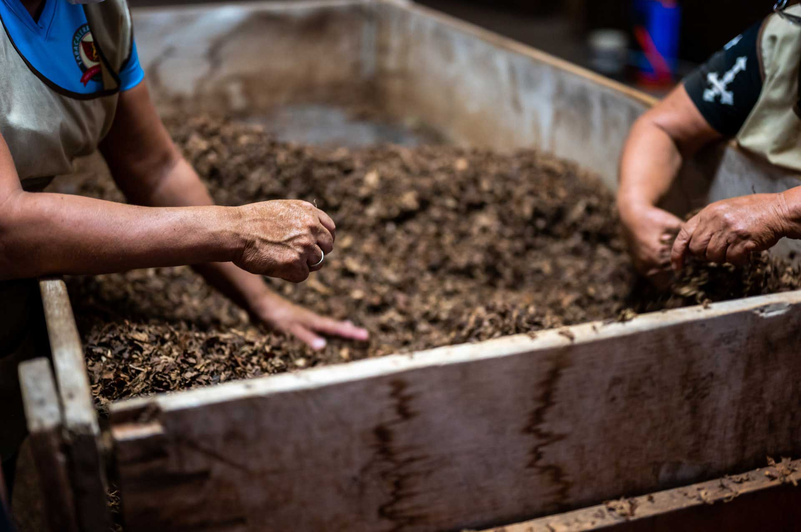
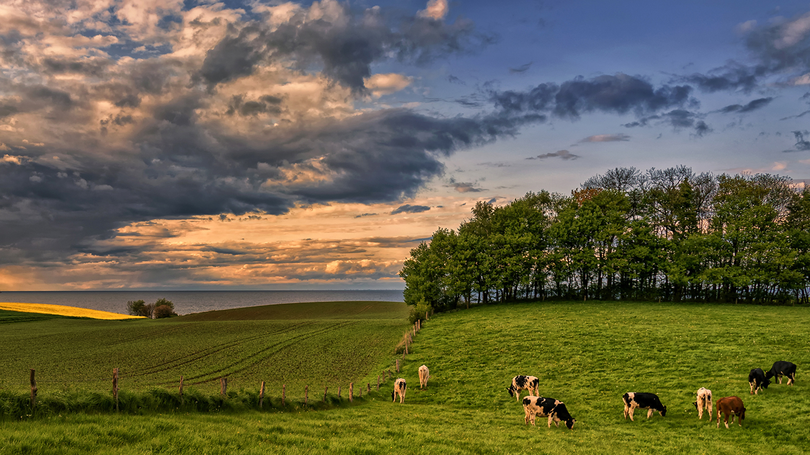
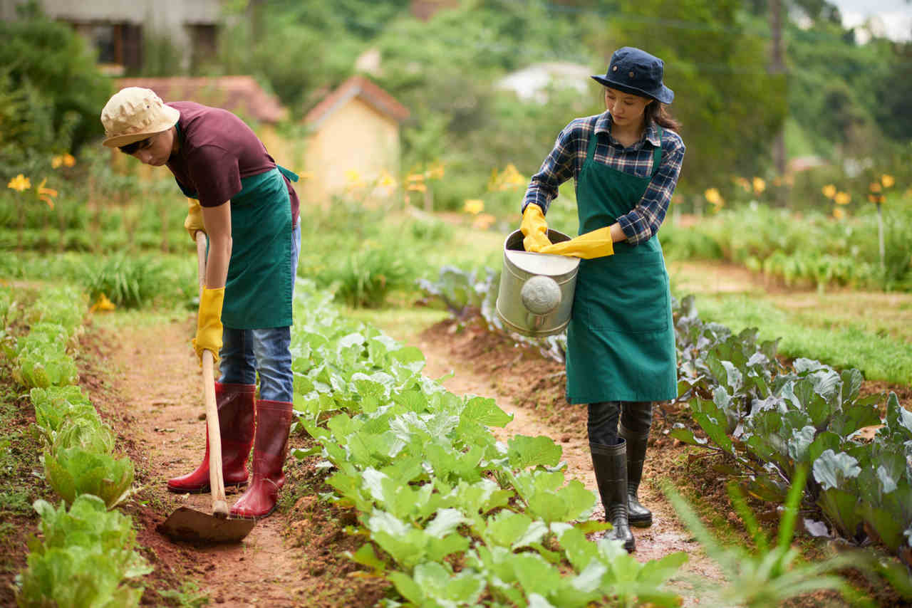

Field Workers

Rural Environment

Field Workers
Field Workers
Rural Environment
Field Workers
See More
Contact with nature: One of the greatest advantages of working in the countryside is the
possibility of being in direct contact with nature, which can provide a better quality of life and
well-being. Job security: The agricultural sector, especially in countries with strong agricultural
production, tends to offer greater job stability, especially in essential activities such as food
production. Diversity of activities: The countryside is no longer limited to traditional agriculture. Today,
there are opportunities in areas such as research, development of new technologies, property management,
marketing, and logistics, offering a variety of activities and challenges. Contribution to a more sustainable future: By working in the countryside, it is possible to
contribute to the production of food in a more sustainable way, preserving the environment and ensuring
food security. Possibility of entrepreneurship: The countryside offers various opportunities for
entrepreneurship, whether in the production of organic food, the creation of agrotourism or the
development of new technologies for agriculture.
Working conditions: Depending on the activity and region, working conditions in the countryside
can be challenging, with long hours, exposure to the elements, and contact with chemicals. Isolation: In some regions, rural properties are located in more isolated areas, which can limit
access to services and a more active social life. Health: Exposure to chemicals, the need to perform heavy physical activities, and lack of access
to health services can compromise the health of rural workers. Low wages: In some areas, the wages of rural workers are still considered low, which can
discourage new professionals from entering the sector. Lack of qualification: Lack of professional qualification is a challenge for both workers and
companies in the sector. Often, rural workers do not have the adequate training for new technologies and
market demands.
Benefits:
Challenges:


Digital agriculture, precision agriculture, and sustainability are some of the main trends shaping the rural job market. New technologies are automating processes, generating data for decision-making and optimizing production, demanding professionals with knowledge in areas such as:
Agronomy: Agricultural engineers with specialization in areas such as genetics, plant breeding, plant nutrition, and pest and disease management.
Information Technology: IT professionals for system development, data analysis, and information management.
Engineering: Mechanical, electrical, and automation engineers for the development and maintenance of agricultural equipment.
Management: Professionals with skills in project management, logistics, marketing, and finance to manage rural properties and agribusiness companies.
Biological Sciences: Biologists with a focus on biotechnology, genetic improvement, and environmental conservation.
In addition to specific technical knowledge, professionals who wish to work in the field need to develop skills such as:
Adaptability: The agricultural sector is constantly evolving, requiring professionals to be able to adapt to new technologies and market challenges.
Teamwork: Collaboration is essential for success in complex projects involving various areas of knowledge.
Creativity and innovation: The ability to think outside the box and develop creative solutions to the challenges of the field is highly valued.
Focus on results: Field professionals need to be results-oriented and able to deliver efficient and effective solutions.
Sustainability: Commitment to environmental and social sustainability is increasingly important for agribusiness companies.